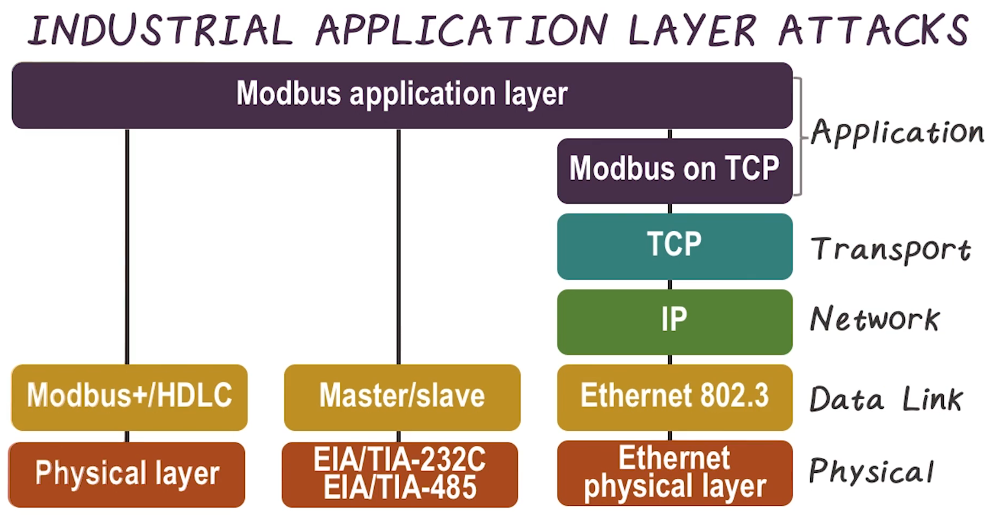
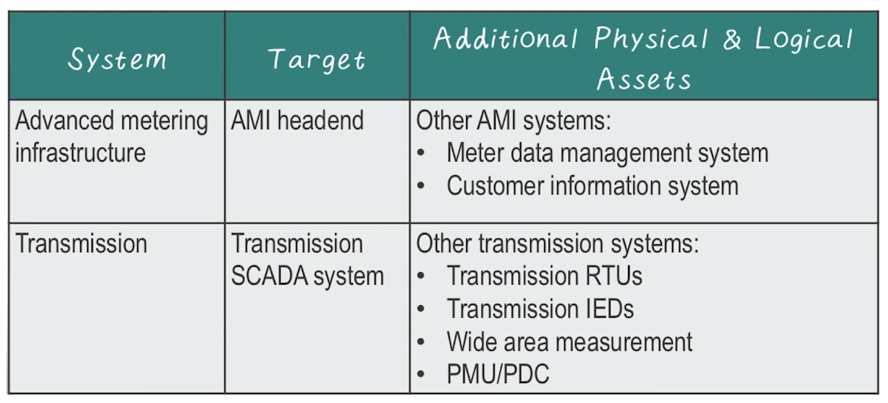
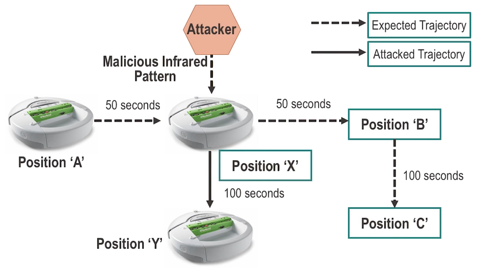
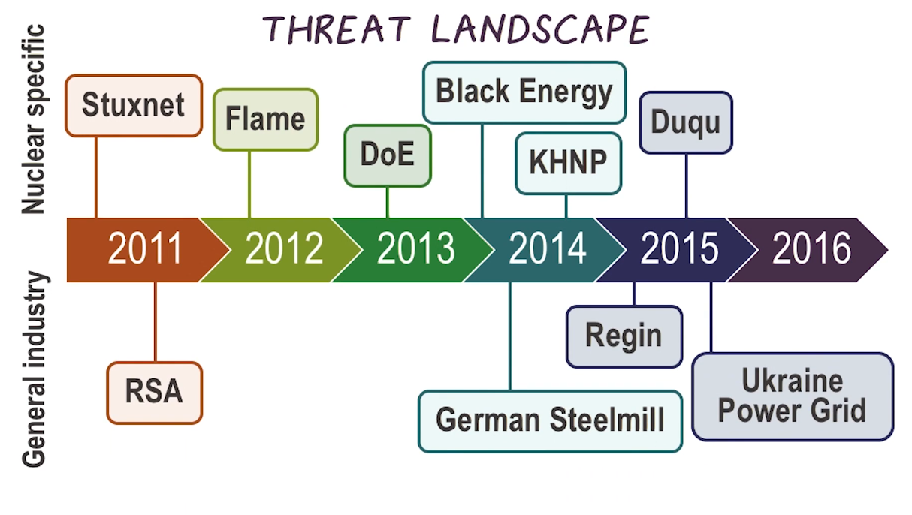

ICPSS Lecture Notes - Lesson 11 - Hacking Industrial Control Systems
Hacking Industrial Control Systems
Motives and Consequences
- Industrial networks are responsible for continuous and batch processing and other manufacturing operations of almost every scale
- Consequences can range from benign disruptions to deliberate sabotage
- List of potential impacts is almost innumerable
- Local impacts include:
- impact to quality and business reputation
- loss of produciton
- loss of intellectual property
- penalties for regulatory noncompliance
- Regional impacts include:
- economic (micro) impact
- mechanical stress/failure
- catastrophic equipment failure
- localized loss of life
- Global impacts include:
- generalized panic
- economic (macro) impact
- widespread loss of life
- Local impacts include:
- A SIS may ensure safety, but it shares too much attack surface with the rest of the Industrial network, and do not ensure security.
- Simple MITM can beat them
- Quote to remember “do not assume that safety leads to security, or security leads to safety”
- Compliance also doesn’t necessarily lead to security
Common Targets
- Each system is unique in composition, but share many components. Detailed knowledge helps the attacker, but there’s enough shared surface to do damage
- For example, a very common target is SCADA servers
- Attack vector could be a control network
- Attack method could be exploitation of trusted connections within control network
- Can result in plant shutdown
Common Attack Methods
- Similar to above, some methods are evergreen when hitting ICS
- Man In the Middle (MITM)
- Denial of Service (DoS)
- when some malicious event attempts to make a resource unavailable
- Can be very impactful
- Replay Attacks
- attacker will eavesdrop on a channel, and can replay traffic which may contain data, commands, or login information
- requires an indepth knowledge of ICS operations to fully exploit, but even a naive attacker can do damage or get lucky
- The reasons these are common are:
- insecure communicatio nrpotocols
- little device-to-device authentication
- delicate communication stacks in embedded devices
- The vectors used to compomise an Engineering Workstation (EWS) are not much different than those used previously with the HMI
- Typically a single hose with strong permissions
- Can configure access control mechanisms
- Can update the primary control equipment
- May contain sensitive documentation
- Blended attacks
- More sophisticated attacks will combine elements of multiple types of malware, and employ multiple attack vectors to increase the potency and threat of the attack
Examples of Weaponzed Industrial Cyber Threats
- First documented ICS cyber-attack “in the wild” was Stuxnet
- Cyber-attacks against industrial networks were, at one time, purely theoretical
- obviously, no longer true
- There have been several high-profile attacks since Stuxnet
- Shamoon (DistTrack)
- publicized due to its highly destructive nature. no precision, just wiped everything it could spread to
- Flame (Flamer or Skywiper)
- showed signs of being a derivative of Stuxnet, but with the goal of espionage instead of sabotage
- Shamoon (DistTrack)
Stuxnet
- Stuxnet is still the “gold standard”, poster child of ICS malware
- was very precise, sabotaging specific ICS devices
- Early versions of Stuxnet were released as early as November 2007
- First real example of weaponzed computer malware
- Extremely complex and intelligent collection of malware
- Armed with 4 0-days, targeting windows machines
- Compromised systems with specific softawre and specific PLCs
- Deployed 7 different propagation methods
- for those using removable media, would remove itself after the media infected 3 new hosts
Dissecting Stuxnet
- It is the first rootkit targeting ICS
- It can self-update even when cut off from the C2 servers
- by enumerating and remembering a p2p network
- Can inject code into PLCs, and also hide itself within PLCs
- Adapts to its environment
- Uses system-level hardcoded creds
- Install malicious Windows drivers, using compromised certs
- Complete details still unknown
Lessons Learned from Stuxnet
- Previous belief: control systems can be effectively isolated from other networks
- Lesson learned: a strong perimeter defence can be bypassed by a curious operator
- Previous belief: PLCs and RTUs lack the necessary attack surface to make them vulnerable
- Lesson learned: PLCs can and have been targeted and infected by malware
- Previous belief: highly specialized devices benefit from “security through obscurity”
- Lesson learned: A highly specalized attack against an industrial control system can occur
- Previous belief: firewalls and IDS/IPS are sufficient to protect a control system network from attack
- Lesson learned: Zero-day vulnerabilities obviate the efficacy of traditional security
Industrial Application Layer Attacks

- Do not always require that a specific vulnerability be exploited, because these applications are designed to have large degrees of control by default. This is in contrast to consumer systems, where applications generally have limited permissions
- In the above example image, attacks can be launched simply by issuing modbus commands. No escalation or control flow hijack necessary.
Cannibalistic Mutant Underground Malware
Malware with a mind!
- Conditional logic to direct activity based on its surroundings
- Update itself in the wild
- Self-destruction of certain code blocks
- self-updates of others
- Stuxnet did this with p2p communication. When a machine with an older version of Stuxnet bumped into a machine with a newer version, it took the update and updated itself
- Malware morphs to avoid detection
- Can also check for presence of other known malware and adjust itself if others are found to help avoid detection
- Stuxnet showed how this can be built, but with a very narrow goal
- The next one may be less specifically targeted
Dealing with an Infection
- Upon detecting an infection, you may not want to immediately clean the system of infected malware
- There may be subsequent levels of infection that exist, yet are dormant and may be activated as a result
- There could also be valuable information
- First step is to logically isolate the infected host so that it can no longer cause any harm
- Allow malware to communicate over C2 channels with host isolated, to learn
- Collect as much forensic detail as possible (system logs, network traffic, memory analysis data)
- Approach the situation with dilligence and perform a thorough investigation
- A bare metal reload may be necessary where a device is completely erased
- even this may not be enough, UEFI or other such compromise may be unrecoverable
Smart Grid Specific Attacks
- Starting with reconnaisance and then scanning, the architecture of the grid can begin to be mapped
- Once a target system is identified enumeration, penetration, and infection occur
- Once breached, the attacker can continue to enumerate and prapagate
Motive
- Smart grid attacks are most easily classified by their intent, because of the smart grid’s diversity and complexity
- Most common motives fora cyber attack against a grid infrastructure:
- theft of information for profit or reconaissance
- denial of service
- By looking at attacks by motive rather than attack processes, a broader risk assessment can be determined
- Remediation occurs at a higher level
Theft of Information
- A lot of valuable information in smart grid
- Personal information about smart grid customers
- finance and billing
- Information about energy consumption
- SCADA and automation systems within the grid also provide a blueprint to the inner workings of the grid operations
Denial of Service
- ICS within smart grid are not (supposed to be) publicly accessible
- Thus, traditional DoS by just flooding packets at a public endpoint are not applicable here
- However, they are also not usually “modern” systems
- Usually running outdated and unpatched operating systems
- Often have low-bandwidth networks
- Running real-time, very fragile industrial protocols
- Thus, actually more susceptible to a Denial of Service attack
Manipulation of Service
- Goal of a manipulation of service attack is to preserve the availability of a service while affecting or altering its operation
- Examples:
- spoofing GPS time synchronization to de-synchronize distribution phasor readings
- Stuxnet attack, which penetrated and altered the specific control instructions
- The manipulation of some data sources could be catastrophic
- example: by manipulating the low-voltage and high-voltage sides of a transformer an attacker can physically destroy it
Common Industrial Targets
- Example 1: Manipulate feeder measurements to target yard protection, impacting yard safety
- Example 2: Manipulate current load measurement to target energy management system, impacting load management systems
- Other examples given
- 
- The interconnectedness of the smart grid allows attacks to propaagate, making most systems viable targets
- The large scale distribution of systems makes it challenging to effectively segment these systems
- While common attack methodologies apply to the smart grid, the attack surface is much larger
- When application-layer protcols are used over TCP/IP, additional vulnerabilities occur
Vulnerability
- After enumeration, various attack methodologies can be used, often exploiting vulnerabilities
- Some of these vulnerabilities are specific to a device and require effort to identify and exploit
- Some are “vulnerabilities” that are inherent within the protocols usedby these legacy systems
- Many smart grid devices possess vulnerabilities that can be determined through analysis and reverse engineering of that device
- Utilizing a variety of open source development and debugging tools
- Looking for weaknesses such as heap or stack overflows
- Many white hat tools and agencies exist to facilitate this process
- Reverse engineering device code is effective but resource-intensive
- There are many well-known, fully disclosed ICDS vulnerabilities that haven’t been patched
- Many of these vulnerabilities have been exploited either in a proof of concept environment or through the development of actual exploit code
- 2016 report from Kaspersky found that:
- 188,8019 hosts with ICS components available via the Internet
- 92%(172,982) remotely available ICS hosts have vulnerabilities
- The number of vulnerabilities in ICS components has increased tenfold during the past five years
Turning a Vulnerability into a Compromise
- When a vulnerability is identified it can be used to build a targeted exploit
- Information about thevulnerability can allow an attacker to craft an attack to compromise the target system
- This process is illustrated in detail by SCADA Hacker
Attack Tools
- There are many tools available used to secure or hack networks
- Most are well-known, gneeral-purpose cybersecurity tools, although recently some Smart Grid specific tools have also been developed
- Many of the tools and frameworks are available as open-source
Social Engineer Toolkit
- An open-source penetration testing framework designed for social engineering
Nessus
- Vulnerability scanner
Nexpose
- Vulnerability management software
OpenVAS
- A framework for vulnerability scanning and management
Canvas
- Network security assessment tool suite
Agora SCADA+
- A collection of many publicly available SCADA vulnerabilities in one exploit pack
Smart Meter Tools
- SecureState’s “Termeneter”
- InGuardians “OptiGuard”
- Two tools available to hack smart meters through optical interfaces
CPS Sensory Channel Attacks
- Reminder of closed-loop feedback setup
- Recall, sensors serve as input for CPS’s
- Depending on the type of sensor, the data rate can be very low
- Theorized that sensors can also be used like network interfaces, possibly to transfer malware
- There has been work that sought to explore such attacks
- The work focuses on different sensory channels
- Visible light
- Infrared
- Acoustic
- Seismic
- The model here is that we assume the system has flawed code, and we attempt to determine the technical feasibility of such attacks, and to illustrate examples
Visible Light Channel
- Widely used sensory channel
- Utilized in various applications including:
- Automatic brightness control for LCDs
- Light detection and ranging (LIDAR)
- In some recent studies, they are utilized as side channels to transfer sensitive data
Infrared Channel
- A number of remote controller systems utilize the infrared channel
- iRobot Create and Turtle bot use it for:
- Navigation assistance
- Obstacle avoidance
- Microsoft Kinect uses IR beams:
- To create a 3d map of the room
- For user interaction
- Since it is not visible, it can support covert channels
Acoustic Channel
- Used by many robotic systems and military applications
- Obstacle avoidance
- Map buildings
- Primary method: emit a short burst osund wave and measure its physical characteristics (e.g., speed, amplitude) from reflection from obstacles via transducers
- Relatively easy to recognize different vehiclse, aircraft, missiles based on their sonic signatures
Seismic Channel
- Popular in smartphones and tablets to enhance the user experience
- Accelerometers are used for presenting landscape or portrait views
- Used for remote controllers for game consoles, e.g. Wii
- Also used for authentication, e.g. Bump app for file sharing
- Accelerometers are used for presenting landscape or portrait views
Evaluation of Sensory Channel Threats to CPS
- Sensory channels can be used in three different ways
- To trigger an existing malware on the host CPS device
- To transfer malware through the channel itself
- Combined with other sensory channels as well as traditional channels (e.g RF)
- How fast can we trigger?
- Using various embedded platforms, the transfer rate was determined empirically to see if there could be support to trigger existing dormant malware
- Study 1:
- Platform: Telosb
- Channel: Light
- Observed Rate (bps): 85-100
- Study 2:
- Platform: MicaZ (MTS400CC)
- Channel: Light
- Observed Rate (bps): 2-3
- Study 3:
- Platform: MicaZ (MTS310CB)
- Channel: Light
- Observed Rate (bps): 50-65
- Channel: Acoustic
- Observed Rate (bps): 2-3
- Channel: Seismic
- Observed Rate (bps): 50-65
- Study 4:
- Platform: iRobot Create
- Channel: Infrared
- Observed Rate (bps): 30-45
Exploiting Visible Light Channel
- Testbed:
- implemented a sample Morse code encoder app on HTC Inspire Smartphone with Android 2.3.5
- implemented a Morse code decoder on the mote
- MTS310CB sensor board
- Purpose: secret trigger/malware transfer
- Successfully transferred the word “MALWARE”
Exploiting Acoustic Channel
- Testbed:
- MicaZ sensors (buzzer and receiver)
- MTS310BC sensor board
- implemented Morse coder/decoder applications on motes
- Purpose: secret trigger/malware transfer
- Successfully transferred the word “ATTACK”
Exploiting Seismic Channel
- Testbed:
- Implemented an incoming call app via vibration on HTC Inspire Smartphone with Android 2.3.5
- Implemented a simple program on the mote for receiving the trigger
- Accelerometer (ADXL 202JE) on MTS310CB sensor board used
- Purpose: secret trigger / malware transfer with the vibrations
Exploiting Infrared Channel

- Attack: Unauthorized control of an access-restricted program module
- Exploited simplevulnerable services in iRobot Create via its infrared channel
- Created custom malware for iRobot
- Goal: gain internal access to a protected program via infrared channel
Is Conventional Security the Solution?
- No
- Current security solutions are limited to protecting the CPS components networked via traditional means (e.g. RF)
- Similarly, security services on the host CPS devices are not suitable for sensory channel threats
- One effective way for defense is to use Intrusion Detection Systems (IDS’s)
- Analyze the sensor traffic looking at data via signature-based or anomaly-based detection methods
- Given sensory channels are novel attack surface:
- There is no current signature for CPS devices
- Anomalies not defined yet for CPS realm
- For sensory channels, physical conditions of the medium, values, characteristics of the received sensory data need to be understood well
